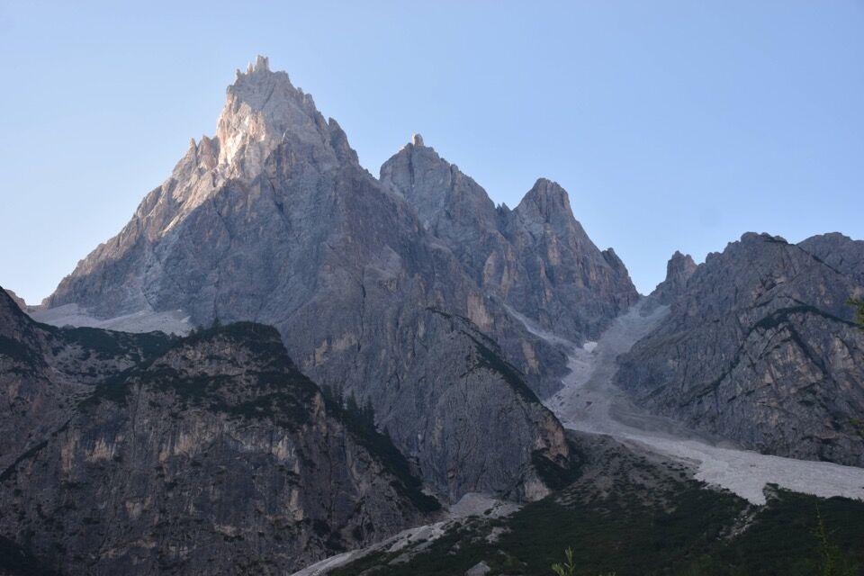
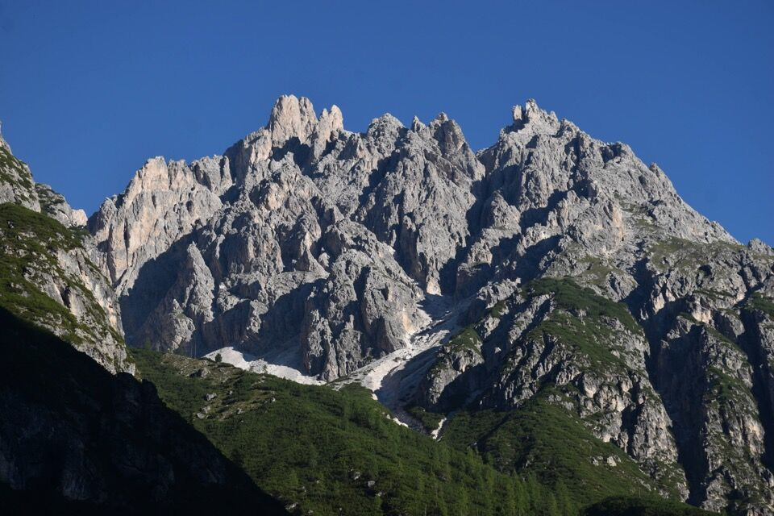
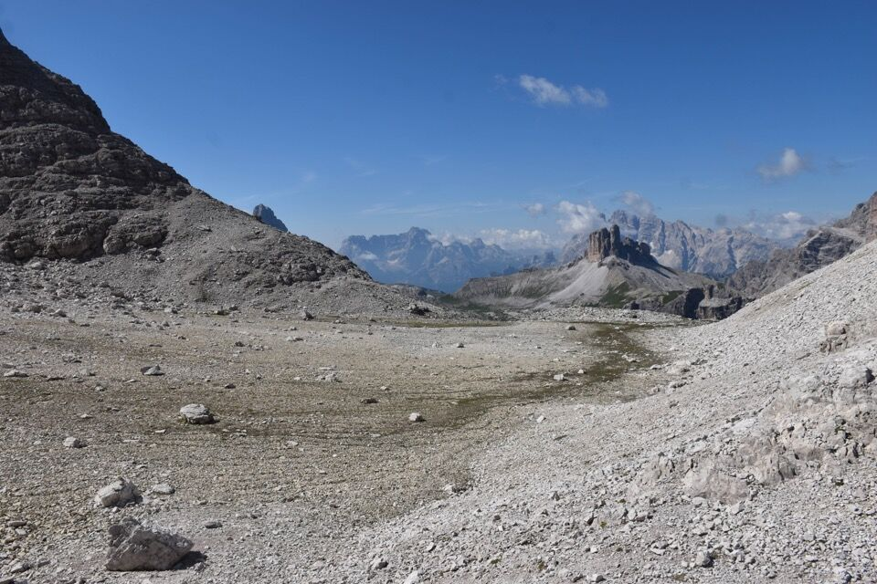

Ogni tanto bisogna pur mettere il becco fuori casa, per cui quale miglior occasione di questa? Si tratta di una stupenda cengia, lunga più di 2km, che taglia l'impressionante versante Ovest del Lastron dei Scarperi (a q2600-2700 circa), mettendo in collegamento il Cadin della Caccia con il Cadin di San Candido.
L'idea mi è venuta sfogliando gli arretrati del Le Alpi Venete presso la biblioteca SAF, dove peraltro ho avuto l'occasione di conoscere personalmente il mitico Ravanatore.
I Tre Scarperi, montagna magnifica e superba, vista dal passo Monte Croce.
Ed eccoci in Val Campo di Dentro: altissima la cima dei Tre Scarperi, a dx l'immenso ghiaione che dovremo rimontare.
La Rocca dei Rondoi.
Classici sentieri zona Tre Cime...
...ma in qualche modo sbuchiamo sulla Lavina dei Rondoi.
Avviso agli avventurieri: guai a non decidersi, come ho fatto io, di montare subito sulla scarpata che delimita in sx orografica il solco del ghiaione! Tocca rimontare decine di metri su terreno ripidissimo di ghiaia e sassi cementati pronti a sbriciolarsi da un momento all'altro. Spero di non ripetere mai un passaggio del genere, non scherzo.
Incredibili vestigia di guerra.

Dopo ore su questo micidiale ghiaione arriviamo al mitico Passaggio della Caccia...
...che ci apre le porte al Cadin della Caccia: che posto unico!
 La cengia si presenta subito larga, invitante e sicura... azz!Con un po' di preoccupazione andiamo ad imboccare la cengia.
La cengia è stupenda, psicologicamente impegnativa perché sembra sempre "brutta" ed esposta, quando in realtà quasi sempre si passa tranquilli.

Il cosiddetto passo chiave, guai a guardare giù: un abisso, il vuoto cosmico.
Il realtà però il suddetto passaggio è impegnativo solo psicologicamente: secondo me peggio è quello immediatamente precedente, perché l'esposizione è la stessa anche se non percepita, ma lì tutto si sbriciola.
Che meraviglia.
Un facile canalino sulla cengia.
Cenge ascendenti tutte da esplorare.
Eccoci finalmente in vista del Cadin di San Candido...
...ma la cengia non è ancora finita.
Iniziamo a salire verso la cima...
...chi seguendo qualche variante.
Da una forcelletta spuntano la Punta dei Tre Scarperi e la Punta Piccola.
Dall'altra parte il Crodon di San Candido, con dietro l'immensa mole della Croda dei Toni.
Bellissima la parte sommitale.
Qualcuno in discesa dalla Punta Piccola dei Tre Scarperi... evento piuttosto raro.
Stupenda triade: Lavina Bianca, Punta Piccola dei Tre Scarperi e Punta dei Tre Scarperi.

Laggiù Cima Unici...
...e la Croda Rossa di Sesto.
Il gruppo Cima Undici - Popera; proprio un anno fa siamo stati con Lisa sul Popera, ah che bel posto.
Verso la val Fiscalina (il paese è Moso).
Qualcuno possiede mezzi di discesa più veloci dei nostri...
Gli abissi lato val Campo di Dentro: cerchiamo di capire per dove diavolo siamo passati, ma non è semplice. La cengia passa lì sotto ma più in basso.
Pochi minuti di discesa ci regalano questa bellissima visione della parete Ovest con le sue cenge.
La Punta Lavina Bianca... che volendo si può salire traversando per cresta.
La Rocca dei Rondoi, non difficile da salire...
...e le misteriose Cime di Sesto.
Tocca scendere.

Decidiamo di scendere per il sentiero, tratteggiato in nero nella carta Tabacco, che percorre il vallon di San Candido: davvero sorprendente.
Salutiamo il Lastròn dei Scarperi con il versante su cui oggi abbiamo girato a lungo: non facile però capire dove siamo passati.